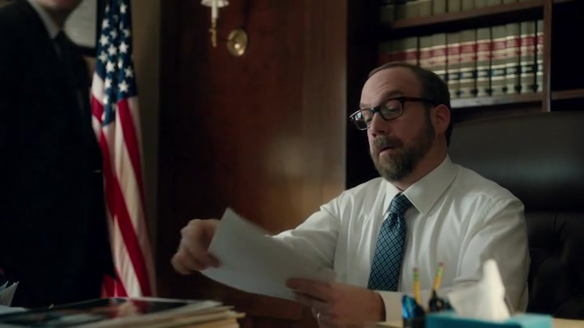

01
检察官办公室 / Axe Capital
同一份市场信息，先引出两种判断

剧情事实Spyros 带来三家小公司的异常交易，关联指向阿克斯。另一边，阿克斯拆解 Lumetherm 的并购交易，要求团队由买入改为做空。查克答应核查线索，但不愿仓促起诉。[5][1]
这一场为什么重要 · 个人解读
这段交叉剪辑建立了双方的专业能力：查克分辨“值得怀疑”和“足以赢下案件”，阿克斯分辨“大家相信的消息”和“消息背后谁正在退出”。对手因此不是一个只靠运气发财的人。查克还要面对他的资源、名望，以及自己不愿输的纪录。
因此 → 查克需要一个能削弱对手的入口。
阿克斯的第一笔反向判断基于对交易结构的解释；不要把这一段与后面的工厂取证混为一件事。